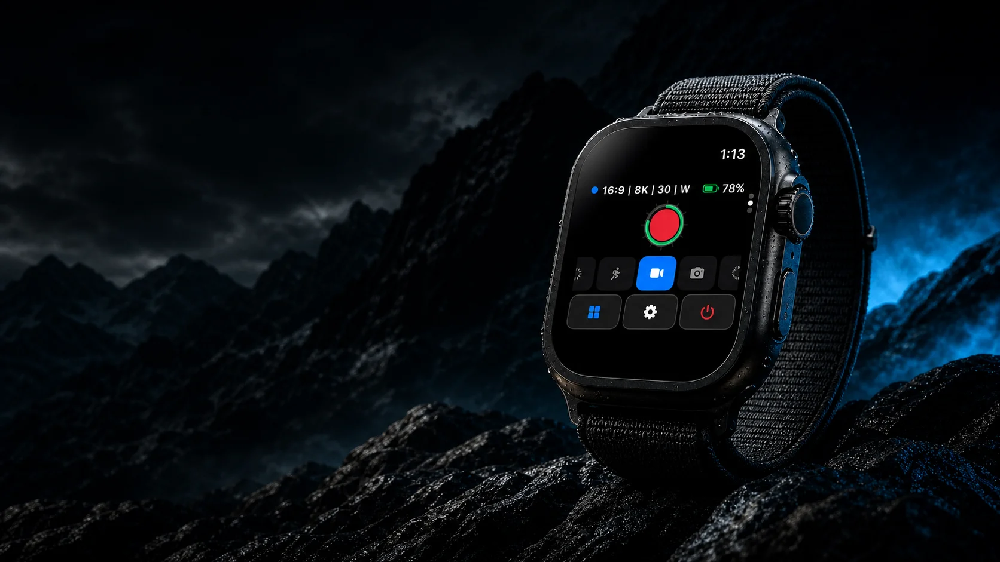
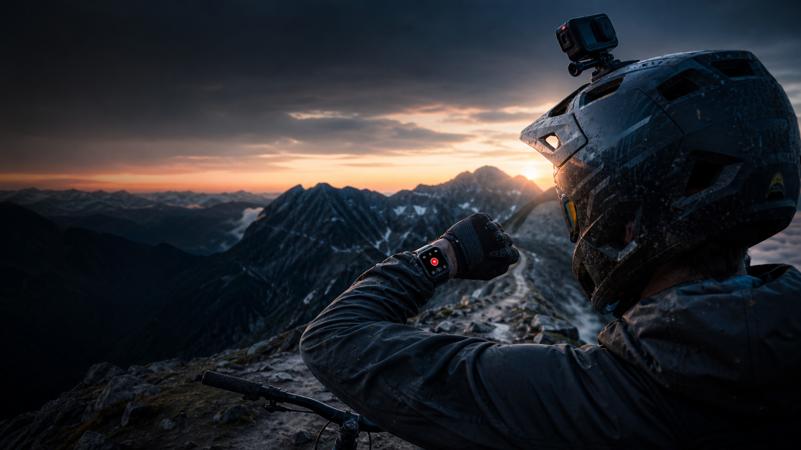
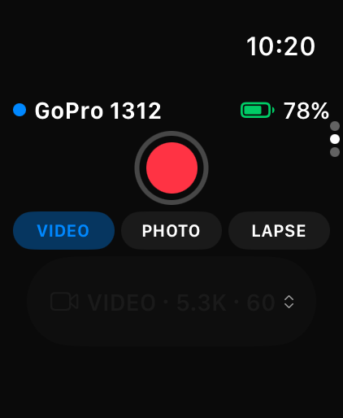
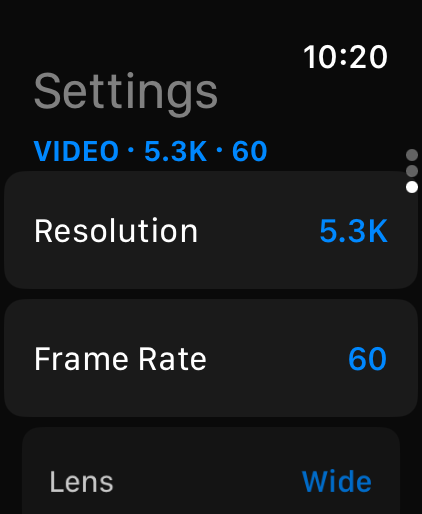

Record & stop
One tap, with haptic confirmation.
CONTROL WITHOUT REACHING
Control your GoPro directly from Apple Watch.

ONE SIMPLE FLOW
The interface, the settings, and the moment you start recording—in one continuous loop.



ON THE WRIST
One tap, with haptic confirmation.
Video, Slo-Mo, Photo, Lapse — from the wrist.
Battery, SD card, heat, GPS, recording time.
Camera state on your watch face.
Start rolling hands-free.
Every screen, no camera required.
ON THE IPHONE

Leave it behind. Bring it when you want more.
MISSION 1 PRO
Real capabilities confirmed on real hardware.
PRICING
Pro includes everything in Free. One purchase, family shareable, no subscription.
Built and hardware-tested for GoPro MISSION 1 Pro. HERO9 Black and later are supported through the Open GoPro API; exact settings depend on camera and firmware.
Not for core Watch controls — Apple Watch talks directly to the camera over Bluetooth. iPhone adds Live Monitor, media tools, preset building, and Multi-Cam.
An iPhone on iOS 17 or later and an Apple Watch on watchOS 10 or later.
None. No accounts, no analytics, no servers. Camera traffic stays between your devices and the camera.
Questions or bugs? Email support@overcrank.ca.
Pro for $9.99. No subscription. No account.
MISSION 1 Pro · HERO9 Black and later · watchOS 10 · iOS 17